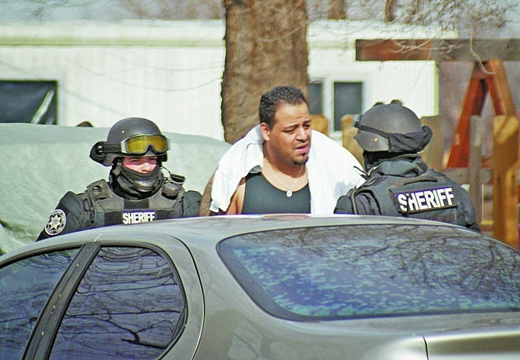
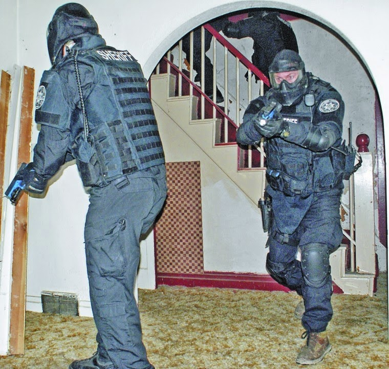

In addition to
being an engine of misery, corruption, and bloodshed, the War on Drugs should
be seen as a multi-tiered criminal enterprise.
At the top echelon
are found the political figureheads who recite pious bromides. That’s likewise
where we encounter the bureaucratic scribes responsible for crafting those
cynical pronouncements and the legislation that gives them substance. The
operational level consists of federally subsidized, hyper-aggressive law
enforcement agencies that carry out military-style raids and seizures. This includes squalid
undercover police operatives and the petty criminals who act as “cooperating
informants,” as well as the strutting armored sociopaths who act on that “intelligence”
by terrorizing people in home invasions that are typically carried out before
dawn or after sunset.
Beneath the lurid
violence of narcotics enforcement can be found the gray, undistinguished local
bureaucrats who are actually in charge of such task as stealing property said
to be “connected” to drug trafficking, caging the people from whom it was
taken, and dividing up the spoils. Official transcripts from several meetings
of Oregon’s Malheur County Commission provide useful insights regarding the
retail-level business of that vertically integrated criminal enterprise.
 |
| The Malheur County War: SWAT raiders arrest a drug suspect. |

For nearly two
years, the Malheur County DA’s office, working in collaboration with the
federally syndicated High Desert Drug Enforcement task force, has been milking
revenue out of a September 11, 2012 raid on the 45th Parallel, which
was a medical marijuana dispensary located in Ontario, Oregon.
Police raids
were carried out against both the co-op and more than a dozen “grow sites” in
both eastern Oregon and western Idaho. A total of eighteen people were
eventually charged with “conspiracy” to provide medical marijuana “for
consideration,” under
a version of the Oregon medical marijuana law that is no longer in effect.
During an April 9
meeting of the Malheur County Commission, Deputy
District Attorney Michael Dugan, an ardent prohibitionist,
explained that “Under Oregon law at that
time you could not sell marijuana even to another medical marijuana
participant.” (Emphasis added.)
“You have to have
an enterprise or an organization,” elaborated Dugan to commissioners Don Hodge
and Larry Wilson. “An enterprise can be a for-profit [or] a non-profit
corporation, it can be a business, it can be an association however loosely
assembled.” It isn't necessary to be directly involved in a specific illegal
act in order to be “wrapped up in the RICO,” Dugan told the two commissioners.
In fact, “it could be the three of us if we associated to do something
illegal.”

The purpose of
the April 9 meeting was to persuade commissioners to continue funding the prosecution
of William Esbensen and Raymond Kangas, the co-founders of the 45th
Parallel, who were the final defendants in the case. On
June 6 they were found guilty in a bench trial of conspiring to provide medical
marijuana “for consideration,” despite the fact that the statute under
which they were prosecuted was dead-letter law.
Interestingly, in
an earlier jury trial two other 45th Parallel defendants, Kelly and
Kerry Rhoan, were found guilty on two RICO counts but acquitted on “conspiracy”
charges.
That verdict “kind
of makes me cross my eyes because in order to have a RICO you have to have … an
agreement to associate, and conspiracy is an agreement to commit crimes,” Dugan
recounted to the Malheur County commissioners. Somehow, the only jury that
rendered a verdict in the 45th Parallel case ruled that the
defendants had created an association to do something that wasn’t considered a
criminal act – in this case, to distribute a legally recognized palliative
medicine to people who needed it.
As it happens,
the purpose of Dugan's presentation on April 9 was to entice the commissioners
into underwriting what amounted to a highly lucrative illicit enterprise:
Prosecuting a RICO case without a clearly established “predicate offense,”
through what appears to be a fraudulent county contract with the DA’s office,
in collusion with a District Judge who had obliquely indicated her willingness
to inflate the charges in order to impose draconian fines that would translate
into larger profits for the county.
During the
September 2012 raids, Dugan boasted, “we recovered” – that is, his armed
accomplices stole at gunpoint – “a number of huge globs of money so to speak.”
Among those “globs” was $53,000 in cash that was seized at Esbensen’s home in
Boise, money that had no proven connection to the 45th Parallel.
That stolen money “was subject to federal forfeiture,” which means it was
available for “equitable sharing to … local law enforcement.” The Malheur
County Sheriff’s office “received about 40 grand of that; [Sheriff Brian Wolfe]
could tell you more exactly, but that goes into his forfeiture fund.”

This was
explained, once again, during the April 9 commissioners’ meeting. Roughly two
weeks later, Malheur County DA Dan Norris reported to the commission that
$15,000 from the Sheriff’s forfeiture fund would “contribute to Mr. Dugan’s
employment costs.” What this means, of course, is that the money stolen from Mr.
Esbensen without due process of law would be used to fund his prosecution on
charges filed under a law that was no longer in effect.
Norris asked the
commission to provide “an additional $15,000 from [the] General fund to
continue to contract with Mr. Dugan” and said that he would “generate
additional funds needed” to underwrite the 45th Parallel
prosecutions, which would cost “a total of $40,000.” How would the prosecutor “generate”
the additional funds? Would he hold a bake sale, perhaps? Of course not: He “requested
[that] monies from anticipated judgments in the 45th Parallel case
be put into the revenue side of his budget” – in other words, that the
prosecution would proceed in the expectation of additional forfeitures and
fines.
Significantly,
before the commissioners heard DA Norris’s pitch they were favored by a
presentation from Circuit Court Judge Patricia Sullivan. In what one veteran
attorney described to me as a clear violation of judicial ethics, Sullivan
lobbied the commissioners to provide increased “resources” – that is, funding –
for the DA’s office. At the time, Sullivan
was presiding over the 45th
Parallel case, yet she was advocating on behalf of the prosecution’s budget
priorities.
Sullivan’s role
in the case was also addressed by Deputy DA Dugan during the April 9 county
commission meeting, in which he described the relationship between the severity
of a RICO offense and the potential windfall for the county.
“I’ve got about
$35,000 in prosecution costs that I’m asking the judge to impose against the
first RICO defendant” – that is, William Esbensen – “add another 2,000 or [three
thousand] for the second RICO defendant and it just keeps going up that way.”
“Now, these
assets, other than money that you’ve recovered [sic], I assume you’re taking
vehicles…?” inquired Commissioner Hodge.
“No, this is all
cash, Don,” replied DA Norris, prompting an important clarification from Dugan.
“There are some
land and houses involved; I’m not sure exactly how far we’ll go in terms of
that,” Dugan stated. “I know that Mr. [Esbensen] owns a number of different
properties in Idaho. County Counsel would have to be, I guess, assisting in
terms of how we go about getting our judgments registered in Idaho and moving
forward to recover [sic] some of the properties there.” Dugan told the
commissioners that “you folks have to make the decision as to how much you want
… to spend in terms of going after Idaho stuff” – that is, how far they want to
pursue the theft of Esbensen’s property in the name of “asset forfeiture.”
As an incentive
to carry out additional seizures, Dugan predicted that Judge Sullivan would be
imposing significant “compensatory fines” against Esbensen and his partner,
Scott Kangas. Getting those judgments would give the DA and the county counsel’s
office funding to “do the house and foreclose on the house or do bank accounts,
those sorts of things,” Dugan observed.
“We’re going to
have a little bit … of an advantage because paying us is going to be part of
their probation,” the deputy DA gloated. “The consequence of not paying that
bill is more than say not paying your phone bill.”
This is entirely
true: In the latter case, a legitimate business would simply cut off its useful
service from somebody who refused to pay for it; in the former, a privileged
extortion ring would kidnap a victim who failed to comply with its demands, and
then put him in a cage.
Under Oregon law,
Dugan continued, sentences are classified in severity “from one to eleven.” As
an unclassified offense, a RICO conviction can be rated anywhere along that
scale.

“I’m asking the
judge to classify them [the 45th Parallel charges] at an eight,”
Dugan informed the commissioners. “We’ll see what she does. An eight
would be a potential prison sentence with an optional probation, and if they
want to do the optional probation you can bet your bottom dollar that the
optional probation is going to require a lot of payment on these prosecution
costs.” (Emphasis added.)
The pronoun “she”
referred to Judge Sullivan, the only female judge in the jurisdiction. By
showing up at a commission meeting about two weeks later to lobby on behalf of
a budget increase for the DA’s office, she clearly indicated what she intended
to do if she had continued as the trial judge in the 45th Parallel
case. As it turned out, Sullivan was forced to recuse herself from the case
roughly a week after her participation in the April 22 county commission meeting
– a development that had interesting consequences for the prosecution during
the sentencing phase, as we’ll see anon.
Under the new
medical marijuana law, Dugan pointed out to the commissioners, the county would
be able to “impose a tax per gram and it’ll be paid… In Colorado it’s a 21
percent tax and they’re making millions of dollars.”
Until the
commission decides how it will profit directly from the sale of medical marijuana
under the new law, however, there was
still the business of how to extract what revenue it could out of the
prosecution of people under the old
law. Norris emphasized that it would be necessary to fund Dugan’s efforts to “finish
the 45th Parallel case,” then he and the commissioners would “have
more in-depth discussions about additional collections and additional use of
that money to see things through and do forfeitures next year. Which I think
from a business standpoint would make sense.”
The “business”
Norris referred to, once again, is a clearly unethical, patently immoral, and
arguably illegal enterprise. In addition to its apparent collusion with Judge
Sullivan, the Malheur County DA’s office had a dubious contract relationship
with Dugan.
During a February
12 county commission meeting, county administrative officer Lorinda DuBois
pointed out that Dugan’s contract “was up December 31st.” This would
mean that he had no authority to act on behalf of the county until and unless a
new contract was completed – and this was a matter of some urgency, DA Norris
insisted, because of “some issues where attorneys in the drug case are seeking
sanctions against the Sheriff’s Office and I don’t have anyone working on
dealing with that issue. And it’s a time bomb ticking for the Sheriff’s Office.
Mr. Dugan needs to be able to get back to work” – which he apparently couldn’t
do unless and until a new contract was completed.
Or – perhaps he
could, according to Norris.

“Now, as long as
we have a temporary authorization for Mr. Dugan to return to work we certainly
can wait until next week to get the paperwork done,” he told the commission.
“Is that legal?”
inquired County Judge Dan Joyce, who clearly saw a problem in that proposal.
“It will be fine,”
insisted an official identified as “Ms. Williams,” because “his contract’s
going to be backdated to January anyway.” This is because “you really can’t do
an amendment; it has to be a new contract from calendar year to calendar year,”
she explained.
Yet somehow a curious
document exists bearing the unwieldy title “First Amendment to Employment
Agreement Between Michael T. Dugan and Malheur County Recorded with Malheur
County Clear as Instrument Number 2013-0597.” That document, an impermissible amendment
to a backdated (which is to say, likely fraudulent) contract, specified that
Dugan’s employment “shall automatically end on June 30, 2014 or when [he] has
worked 541 hours, whichever occurs first.”
There’s reason to
believe that Dugan had expended his allotment of hours before the 45th
Parallel trial was over. But that matter is academic if the backdated contract
itself was invalid. Although some might regard this to be a matter of petty
technicalities, it should be remembered that the defendants in this case were
convicted of operating a criminal conspiracy to “deliver” a legally protect
medicine in ways that supposedly violated
arcane provisions of a medical marijuana law that is no longer in effect.
As noted earlier,
Judge Sullivan’s participation in this case was central to the prosecution’s
strategy. After Sullivan was replaced by Judge
Gregory Baxter, Dugan prosecuted Esbensen and Kangas as level 4 offenders.
Following their conviction, Dugan asked Judge Baxter to revise – or “backdate,”
if you prefer – the offenses as qualifying for level 8 sentences, which would
justify the imposition of heavier “compensatory fines” – with the threat of
lengthy prison sentences as leverage.
Unlike Sullivan,
Baxter didn’t appear sympathetic to the financial needs of the Malheur County
DA’s office. He ruled that the defendants would be sentenced under level 4
guidelines, which meant two years of probation rather than a prison term. The
final amount of “compensation” has yet to be decided, but it will most likely
be a less lucrative pay-out than the DA’s office had anticipated – pending additional
forfeiture actions, of course.
 |
| Police state scrimmage: Malheur County SWAT rehearses a home invasion. |

From teeth to
tail, the
45th Parallel case has been a criminal enterprise on the part of
the prosecution. It began with the corrupt actions of Boise-based
DEA Agent Dustin Bloxham, who committed multiple felonies (including
interstate wire fraud and falsifying medical records in order to obtain an
Oregon medical marijuana card) during the course of an unauthorized undercover
operation on a medical marijuana clinic outside his jurisdiction.
One of the key
witnesses for the prosecution, Tricia
Gardner, is a repeat narcotics offender and serial check
forger who continues
to operate a medical marijuana facility in Ontario despite a county-wide
moratorium. A former staffer at the 45th Parallel, Gardner filed the
necessary paperwork to open that clinic on September 10, 2012 – the day before
the task force raided the co-op.
In November, Oregon
voters will consider a measure that would de-criminalize recreational use of
marijuana for residents who are at least 21 years of age. As Dugan
indicated to the Malheur County Commission, the loosening of restrictions on
marijuana use would require updating the local plunderbund’s business plan to
emphasize taxation, rather than prohibition. In the meantime, they will have to
be satisfied with using whatever means are at their disposal to wring the last
trickle of revenue out of Esbensen, Kangas, and their fellow victims of the
prohibition racket.
A quick note...
The gifted and principled writer Ilana Mercer recently paid me a very high compliment by describing me as "quixotic." Like the noble (albeit unbalanced) Knight of the Sad Countenance, I focus my energies on battles against prohibitively stronger opponents. In my case, the giants against whom I contend aren't windmills. And unlike Don Quixote, I have a family for whom I must provide. I would be humbly grateful for any help you can supply. Thank you so much, and God bless.
Dum spiro, pugno!